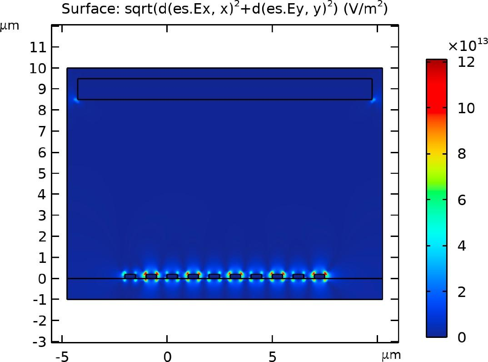
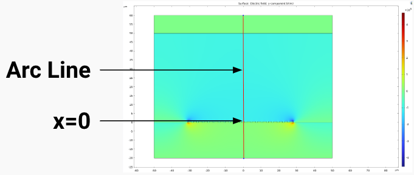
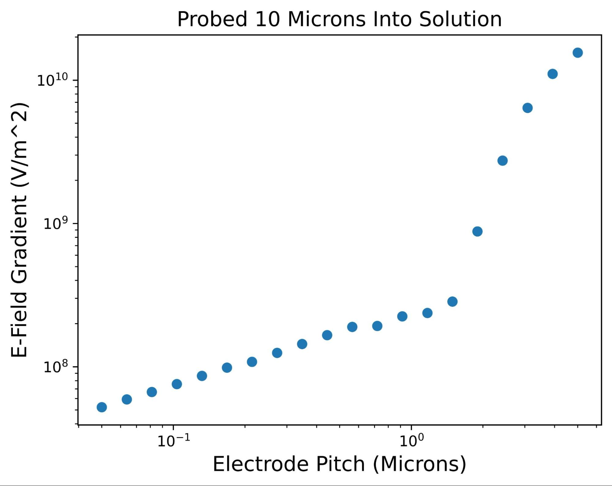

Maybe you're a commercial researcher working on higher performance nanowire transistors for computing. Maybe you're a biomedical researcher developing novel lab on chip technology, or a solar cell manufacturer interested in plasmonic particles. Maybe you're a professor or grad student looking to study fundamental properties of nanoparticles. In any case you've found a nanoparticle that can solve your problem if you can place it where you want it.
Now what?
You may be able to manually place nanoparticles with micro manipulators, or pattern onto randomly dispersed particles, if you're a fundamental science researcher. However is this a good statistical sample? You read through the scientific literature and find a method to pattern nanoparticles, AC electrical assembly (sometimes referred to as dielectrophoretic assembly, DEP, named after one of the more desirable forces in the process). In this process the instantaneous polarization of the nanoparticles forms an electric dipole, depending on the properties of the solution and particle itself, and experiences a force towards areas of high electric field gradient in positive DEP. This is useful for deterministic construction of nanoparticle based devices as the particles can be aligned across opposite electrodes which can be lithographically patterned on a wafer.
The dielectrophoretic force is proportional to the electric field gradient and so decreases further out into the bulk of the solution. In an attempt to solve this problem you find experimental setups in literature where a solution is flown over electrodes through a microfluidic channel, often fabricated from PDMS with syringe driven inlets and outlets. You first have to learn how to pattern and plate thick copper or find some other method to pattern the channels, spin on PDMS, cure the PDMS, cut it out, plasma activate it and stick it to the surface.
Maybe it's misaligned if this is done by hand and needs to be redone. Maybe your syringe inlet flow is too high at first and pops your microfluidic channel off the substrate, or maybe you just complete your assembly and have to take it back off. There's only so many times you can reuse the channel before it becomes contaminated with too many particles to reliably adhere to the surface. So now microfluidic fabrication will continually be part of your process: prepping, attaching, undesirably becoming detached periodically throughout assembly spilling solution and nanoparticles everywhere, contaminating the surface of your wafer. Research is getting done, but it feels like you're working with the printer from Office Space.
As covered later you may find that for smaller particles and electrode pitches the channel does not force enough particles close to the surface to achieve consistent and dense particle pattern yields, although for larger particles this is less of an issue.
If there's one thing you don't want to do in high volume microfabrication, is touch the top of your wafer. This is done during chemical mechanical planarization where aggressive cleaning can occur before the next step. However, the next step here is either to connect to your particles with lithography, encapsulate them with PECVD, or similar. Cleaning the surface immediately after deposition before securing the particles would lead to loss of assembly. Particles and residue from microfluidic channel placement can induce yield loss, which increases your cost per yielding device due to wasted time, labor, and materials. Additionally microfluidic channels collapse at widths much wider than their depth, limiting the size of these channels. This either means that a singular channel must be attached and detached from a wafer several times significantly decreasing throughput, or multiple microfluidic channels must be patterned into a larger PDMS block. Even in the latter case you lose the ability to pattern within the rib areas of the channel, both decreasing throughput and maximum die size. You need to implement methods for automated alignment of the channels, and methods to know how to reject contaminated channels. An additional manufacturing process protocol needs to be established for the fabrication of the channels which at best reduces capacity on existing tools, and at worst requires the purchase of multiple additional tools.
If you've read the previous sections, or have used this method, you're probably either aggressively searching for alternative approaches or typing “how to apply to law school” into your search engine of choice. If you've chosen the former and are still with us, ideally we'd like to (1) not have to make an extra part every n-times we do the assembly, (2) not contaminate the wafer by touching it, (3) not limit the assembly area, and (4) not have to add a lot of precision microscale robotic handling and extra moving parts that can break.
We've established that the dielectrophoretic force moves instantaneously polarized particles along the electric field gradient to the electrode area (in positive DEP). Performing finite element analysis we see this rapid drop off into solution in Figure 1.

Figure 1: Electric field gradient with alternating AC electrodes, corresponding with the dielectrophoretic force.
Simulating a range of electrode pitches from 50 nm to 5 microns we can obtain the electric field gradient vs. pitch at 10 microns into the solution as in Figure 2. Here we see that at smaller pitches the dielectrophoretic force on particles in bulk solution is much lower, which would provide even greater challenges to microfluidic dimensions and their ability to concentrate particles reliably near the surface if it was still being considered.

Figure 2: Electric field gradient vs. electrode pitch probed as a line average 10 microns into the solution.
To provide a uniform force on the nanoparticles toward the surface of the substrate in the bulk solution we can utilize the electrophoretic force. In electrophoresis a charged particle, a particle with a high magnitude zeta potential, placed in solution within an electric field is subjected to force in the direction of the electric field. Importantly, this DC phenomenon does not impact the dielectrophoretic force as the dielectrophoretic force is a frequency dependent phenomenon. By utilizing a novel electrode configuration consisting of a DC bias electrode opposite of the substrate we can exert a constant electrophoretic force towards the AC electrodes. Then once the particles are sufficiently close to the electrodes the dielectrophoretic force will be the predominant force assembling nanoparticles across pairs of AC electrodes. The electric field gradient, dielectrophoretic driving force, and electric field, electrophoretic driving force, are shown in Figure 3 with and without the addition of a bias electrode.

Figure 3: Dielectrophoretic and electrophoretic force drivers with and without a bias electrode, showing the ability of a bias electrode to concentrate particles near the wafers surface.
We can see that with this innovation we solve for our required criteria to remove the major disadvantages of microfluidic channel implementation. There's no additional parts to be made for each assembly, we do not need to make contact with the wafer, assembly to electrode configurations across the entire wafer can be achieved simultaneously, and there are no additional complex moving parts.
nTessimal is including this and other novel solutions into our patent pending nanoparticle assembly chambers. Please reach out via our “contact us” form if you are interested in manufacturing state of the art nanoparticle based electronics. We have low cost prototyping chambers and R&D services to help make your next innovation a reality!